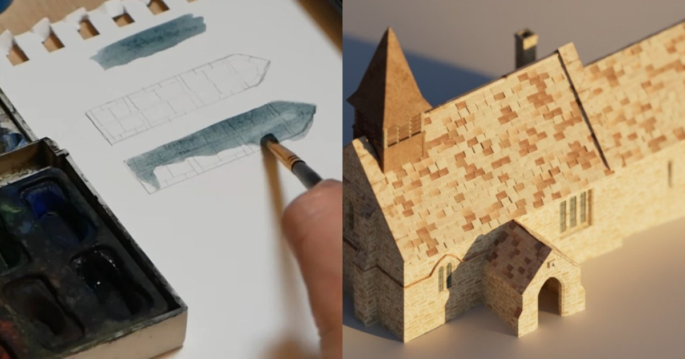

把水彩畫變成 3D 場景貼圖：從實體繪製到 trim、atlas 與無縫材質
Beno Raistrick 先依模型形狀繪製實體水彩，再於 Krita 調整階調與對比，整理成 trim sheet、atlas 或無縫貼圖；場景主要靠建模補足凹凸，而不是依賴 normal map。

製作案例 ★★★☆☆
完整分析
貼圖製作流程
作者先完成建模以確認每個區域需要的貼圖形狀，再用水彩繪製；數位化後在 Krita 調整 levels 與 contrast，將素材擠進 atlas／trim sheet，或用 clone stamp 製作可平鋪版本。
模型與畫面整合
繪製內容會配合物件本身的歪斜與比例，讓模型和筆觸對齊。因作者幾乎不用 normal map，磚牆等立體細節要另外建模；Unreal 內以低角度方向光與較大 source radius 製造柔和夕陽陰影。
限制與待驗證
作者尚未從水彩穩定產生可用的 height／normal map，並明確把這部分留待後續研究。淺景深與 tilt-shift 只用於強化手作模型感，不能替代材質和幾何對齊。
BRIEF｜來源已驗證；證據深度較有限，完整分析會明確區分已知資訊與待驗證事項。